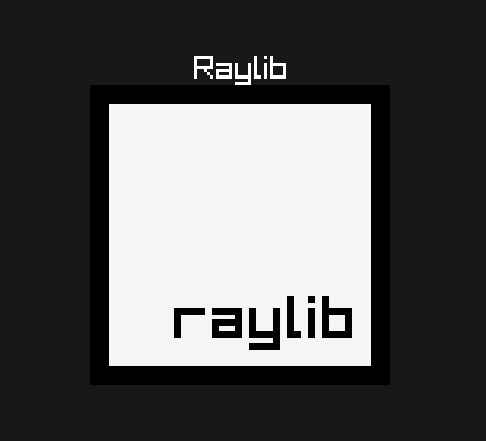

MatryoshkaUI
Projet PLM — Paradigme Déclaratif
Léonard Jouve & Killian Viquerat
HEIG-VD — 2024
go
raylib
Léonard Jouve & Killian Viquerat
HEIG-VD — 2024
Cours PLM (Programming Language Multiverse)
L'interface est un arbre d'éléments immuables
Root(Div(...))LayoutAxis : Horizontal / VerticalPadding : Inner spacingGap : Spacing entre enfantsJustify & Align : Flexbox logicBorderRadius : 0..1 (Corner radius)BorderWidth/Color : BorduresDiv(Children(...), Style(LayoutAxis(LAYOUT_VERTICAL), GapAll(10)))
FontSize(uint16) : Taille de la police (défaut: 16)Color(utils.Color) : Définit la couleur du texte (spécifique à Text)Text("Hello World",
TextStyle(
FontSize(24),
Color(utils.RED),
),
)Width & Height : Sizing de l'assetImage("assets/logo.png",
ImageStyle(
Width(Fixed(100)),
Height(Fixed(100)),
),
)Fit() : Taille du contenu (défaut)Fixed(size) : Taille absolue en pixelsGrow(factor) : Remplit l'espace restantPercent(%) : % de la taille du parentPercent est résolu après le parent. Il s'effondre à 0 dans un parent Fit(). À utiliser uniquement dans des parents Fixed, Grow ou Percent résolus.
Syntaxe Déclarative
Root(
Div(
Children(
Text("Raylib",
TextStyle(FontSize(32), Color(utils.WHITE))
),
Image("raylib.png",
ImageStyle(Width(Fixed(300)), Height(Fixed(300)))
),
),
Style(
LayoutAxis(LAYOUT_VERTICAL),
Width(Grow(1)), Height(Grow(1)),
Justify(JustifyCenter),
Align(AlignCenter),
),
),
)
Rendu Final (Raylib)

L'algorithme de résolution en 3 phases
Bottom-Up : Mesure des tailles intrinsèques (Fit/Fixed).
Top-Down : Distribution de l'espace (Flex/Percent).
Final Pass : Calcul des coordonnées (x, y) finales.
1. Mesure des feuilles : Calcul des dimensions intrinsèques
2. Agrégation : Le parent s'adapte à ses enfants (Fit)
3. Propagation : La racine finalise l'arbre
Espace restant identifié dans le parent
Le nœud Grow(1) remplit l'espace disponible
Tailles résolues, alignement initial (Start)
Application du JustifyCenter et des Gaps
Maintenir des phases de calcul (Sizing vs Flex) strictement isolées malgré les dépendances croisées entre parents et enfants.
Gérer les éléments dont la taille dépend du parent (Percent/Grow) sans briser l'algorithme récursif de remontée des tailles (Fit).
L'implémentation du wrapping des enfants dans les conteneurs (similaire au flex-wrap) pose des défis majeurs :
Verdict : Garantir un rendu sans bug avec du wrapping demandait une complexité algorithmique (gestion des overflows, alignement par ligne) impossible à stabiliser dans le temps imparti.
Indépendance totale vis-à-vis de l'affichage
Le moteur de layout produit des coordonnées (x, y, w, h). N'importe quelle technologie peut ensuite les dessiner.
type Renderer interface {
InitWindow(width, height int, title string)
Render(element *dsl.Node)
CloseWindow()
}
TCellAperçu en direct : Raylib & Terminal
Retrouvez le projet sur GitHub